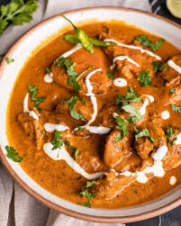

Butter Chicken Recipe
Home

Description
Butter Chicken is a rich and creamy Indian curry made with tender chicken pieces simmered in a flavorful tomato-based sauce with butter, cream, and aromatic spices. Perfect to enjoy with rice or naan.
Ingredients
- 500g boneless chicken, cut into pieces
- 2 tbsp butter
- 1 cup tomato puree
- 1/2 cup cream
- 1 onion, finely chopped
- 2 cloves garlic, minced
- 1 tsp ginger paste
- 1 tsp garam masala
- 1 tsp chili powder
- Salt to taste
- Fresh coriander leaves for garnish
Steps
- Heat butter in a pan and sauté onions, garlic, and ginger until golden.
- Add chicken pieces and cook until lightly browned.
- Add tomato puree, garam masala, chili powder, and salt. Simmer for 10-15 minutes.
- Stir in cream and cook for another 5 minutes until the sauce is creamy and chicken is fully cooked.
- Garnish with fresh coriander leaves and serve hot with rice or naan.